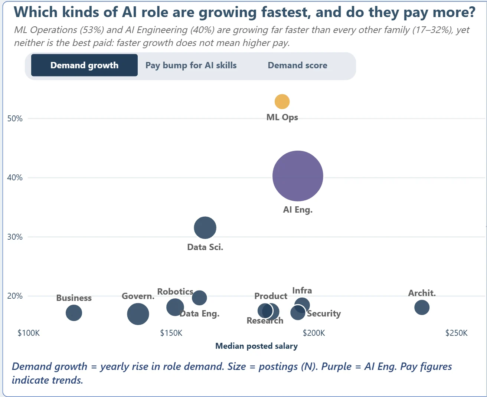

Chart 1 · Role families
Which kinds of AI role are growing fastest, and do they pay more?
Each bubble is one of the 12 role families: median posted salary across, the metric chosen with the switch up. Size = postings (N); purple = AI Engineering, the largest family (N = 736).
Outside AI Engineering each family has only 50–127 postings. Demand growth, demand score and pay bump are fields supplied with the dataset, not trends we measured, so we read them directionally.
Try the switch above the chart; it behaves like the toggle in the Power BI report.